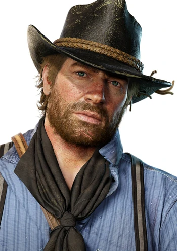
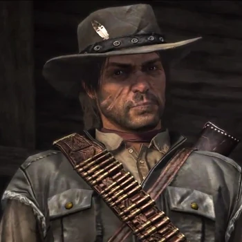
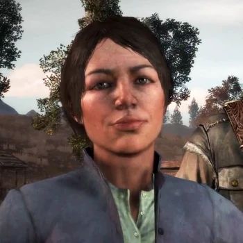
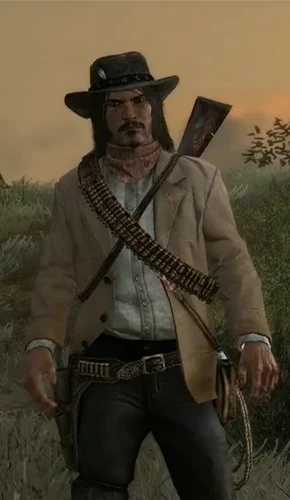

Red Dead Redemption 2
Red Dead Redemption 2 es un videojuego de acción-aventura western basado en el drama, en un mundo abierto y en perspectiva de primera y tercera persona,1 con componentes para un jugador y multijugador.2 Fue desarrollado por Rockstar Games. Es la precuela de Red Dead Redemption y el tercer juego de la saga Red Dead. Su fecha de lanzamiento fue el 26 de octubre de 2018 en las consolas PlayStation 4 y Xbox One. Fue lanzado en Microsoft Windows el 5 de noviembre de 2019
Personajes:
Arthur Morgan
Arthur Morgan (1863 - 1899) es un personaje central de la saga Red Dead y protagonista de Red Dead Redemption 2. Se le considera uno de los cabecillas y principales miembros de la banda de Dutch van der Linde.

John Marston
John Marston (1873 - 1911) es el protagonista de Red Dead Redemption y Undead Nightmare y deuteragonista de Red Dead Redemption 2. Además, aparece como modelo de personaje multijugador en Mentirosos y Tramposos. Es interpretado por el actor Rob Wiethoff.

Abigail Marston
Abigail Marston, nacida Abigail Roberts (1877 - 1914), es un personaje principal en Red Dead Redemption y secundario de Red Dead Redemption 2. Es madre de Jack Marston y esposa de John Marston, el protagonista del primer título. También aparece su modelo de personaje en el DLC Mentirosos y Tramposos.

Jack Marston
John "Jack" Marston Jr. (1895 - ¿?) es un personaje central de la saga Red Dead, que actúa como deuteragonista en Red Dead Redemption y personaje secundario en Red Dead Redemption 2. Además, su modelo de personaje está incluído en el DLC Mentirosos y Tramposos.
